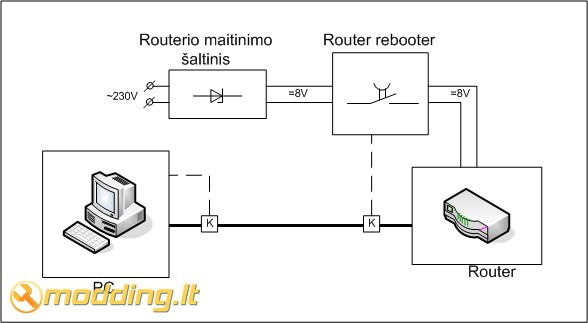
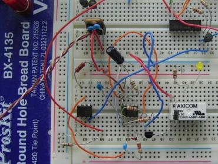

Router rebooter
Turiu aš tokį šaunų SMC gamybos maršrutizatorių SMC7004VBR Barricade. Routeriukas šaunus: elektros nedaug valgo, turi ugniasienę, lengvai valdosi per web sąsają, žodžiu, atlieka viską, ko man iš jo reikia. Tik laikas nuo laiko nulūžta.. Nors daiktas ir senas ir jau savo tikrai atidirbęs, bet man kažkaip ranka nekyla seno draugo atsikratyti. Be to, jį perkrovus, vėl veikia normaliai. Bet pagrindinė bėda ne tame. Kaip ir daugelis iš mūsų aš esu mėgėjas palikti savo kompiuterį įjungta 24/7 (na bent 12-14/7). Ar kokį serveriuką pasileidžiu ar webcamerą, ar dar kokią naudingą programėlę, kuri mielai kietą diską duomenim užpildo. Todėl labai būna pikta, jei po gerų 8 kompiuterio darbo valandų pamatau, kad prieš 7 valandas buvo dingęs ir taip neatsistatęs interneto ryšys. Taip kompiuteris dirbo tuščiai, tik elektrą degino. Gaila ir neatsisiūtų duomenų ir sudegintos elektros. Ekonominis "pravalas" gaunasi.
Taip ir kilo mintis sukurti kažkokį įrenginį, kuris automatiškai perkrautų maršrutizatorių dingus internetui. Panašių įrenginių kaina yra per didelė mano kišenei, todėl nusprendžiau viską konstruoti pats. Iš karto turiu atsiprašyti elektronikų, tinklistų ir programistų už neoptimalius techninius sprendimus. Konstruojant "router rebooter" man svarbiausia buvo galutinis rezultatas, o ne procesas. Svarbu buvo, kad įrenginys nepriekaištingai atliktų savo vienintelę funkciją. Taip pat užsibrėžiau tikslą, įrenginį surinkti tik iš jau turimų detalių, t.y. nieko specialiai jam nepirkti. Taip pat turiu atsiprašyti nuolatinių modding.lt skaitytojų, nes tai nebus standartinis žingsnis po žingsnio how-to. Šio straipsnio paskirtis yra maksimaliai aiškiai aprašyti sukurtą įrenginį ir pateikti visą reikiamą informaciją jam atkartoti. Jei jau jo reikia mano dviem grupiokams, todėl jo tikrai gali reikėti dar ir kitiems keliems žmonėms..
Funkcinė schema ir jos aprašymas
Router rebooter sistemą sudaro kompiuteris, stebintis ar yra interneto ryšys. Interneto ryšiui dingus, kompiuoteryje veikianti programinė įranga formuoja signalą router rebooter prietaisui, kuris paprasčiausiai atjungia maršrutizatoriui maitinimą ir po 10 s vėl jį prijungia. Signalo perdavimui panaudotos tinklo kabelio laisvos gyslos. Norint kiek galima labiau supaprastinti prietaiso schema, jis yra jungiamas tarp maršrutizatoriaus maitinimo šaltinio ir pačio maršrutizatoriaus. Taip pati schema yra maitinama iš maršrutizatoriaus maitinimo šaltinio, be to, komutuojama DC įtampa, todėl reikia mažesnės relės.
Elektrinė principinė schema
Nors schema ir atrodo sudėtingai, čia tikrai nėra nieko ypatingo. Pradėsiu nuo komutatoriaus pusės. Komutatoriaus schema sudaro NE555 taimeris, dirbantis mono stabiliu režimu, kurio laiko pastovioji t=10 s. Kitaip sakant, paveikus įėjimo signalui, suveikia taimeris 555 ir 10čiai sekundžių relė K1 gauna maitinimą. Relės maitinimas yra komutuojamas per tranzistorių T1. Suveikus taimeriui NE555, jo išėjimo OUT lygis pasidaro aukštas, pro rezistorių R3 ir tranzistoriaus T1 BE sandūrą prateka srovė, atidarydama minėtąjį tranzistorių. Taip yra "įnulinimas" relės K1 16 kontaktas ir relė suveikia, atjungdama maršrutizatoriui maitinimą.
Taimerio laiko pastovioji priklauso nuo rezistoriaus R1 ir kondensatoriaus C1 dydžių: t=R1xC1. Daugiau informacijos apie 555 darbo režimus bei veikimo principą galite persiskaityti čia. Šioje vietoje, taip pat verta paminėti, kad labai didelę įtaką relės darbui turi rezistorius R3. Jei jis parinktas per didelis, tranzistorius atsidarys nepilnai, ir relė nesuveiks arba suveiks pusiau (pasirodo, ir taip gali būti). Rezistorius R3 gali būti apytiksliai parinktas pagal formulę: R3 = 0.2 × RR × hFE, čia RR yra relės K1 ritės varža, o hFE parinkto tranzistoriaus stiprinimo koeficientas. Plačiau tranzistoriaus bazės varžos parinkimas yra aprašytas šio tinklapio skyriuje "Choosing a suitable NPN transistor".
Galite pastebėti, kad NE555 trigger įėjimas yra gan keistai pajungtas. Projektuodamas šią schemą, bandymų stadijoje netikėtai susidūriau su "false triggering" reiškiniu, kai 555 suveikdavo būtent tada, kai to nereikėjo. Šios bėdos sprendimas yra nusižiūrėtas iš šio puslapio skyriaus "555 timer Mono stable (one shot) circuit". Kai optrono OK1 šviesios diodas užsidega (apie tai šiek tiek vėliau), atsidaro optrono išėjimo tranzistorius. Per jį ir 100K rezistorių R6 užsikrauna kondensatorius C5, savo ruožtu kelioms akimirkoms "padarydamas žemu" taimerio IC1 (NE555) TRIG įėjimą. Kai optrono tranzistorius užsidaro, kondensatorius išsikrauna per rezistorius R4 ir R6. Taip TRIG įėjimas vėl tampa aukštas. Diodas D2 saugo nuo viršįtampio TRIG įėjime, kuris gali susidaryti išsikraunant kondensatoriui C5. Rezistorius R2 papildomai "įpliusina" TRIG įėjimą, apsaugodamas nuo nepageidaujamo taimerio suveikimo.
Visa ši schemos dalis yra maitinama iš maršrutizatoriaus maitinimo "blokelio" per įtampos stabilizatorių 7805. Visos schemos detalės yra paskaičiuotos būtent 5V įtampai. Kadangi, 7805 gali stabilizuoti įtampą gan plačiame diapazone, tai leidžia naudoti schemą su įvairiausiais maitinimo šaltiniais ir pritaikyti beveik bet kokiems maršrutizatoriams. Štai taip atrodo ant universalios montažinės plokštės surinkta komutatoriaus schema:
Elektrinės principinės schemos kairiajame kampe yra pavaizduotas komutatoriaus valdymo įrenginys, kurį sudaro LTP kištukas, skaitiklis 4017 ir optronas 4N25. Optronas parinktas, norint galvaniškai atskirti kompiuterio ir router rebooter komutatoriaus grandines. Kaip matote, OK1 šviesos diodas yra komutuojamas per tranzistorių T2. Tokiu būdu dar kartą bandžiau išvengti "false triggering" susidarymo, nes esant dideliems atstumams tarp įrenginių yra žymiai patikimesnė žemų lygių komutacija. Taip net netyčia tinklo kebelio gijose atsiradęs parazitinis impulsiukas neįžiebs šviesos diodo ir nesukels routerio persikrovimo. Rezistorius R5 nėra būtinas, bet rekomenduotinas.
Daug kam gali iškilti klausimas, kam reikalingas skaitiklis 4017. Visa bėda slypi mano pasirinktame bendravimo su Router rebooter sąsaja. Pasirinkau LPT, nes tai buvo vienintelė greita galimybė. Vienintelis COM portas jau buvo užimtas, o USB draiverio visai nenorėjau rašyti; liko LPT. Tik jis mano kompiuteryje (gal ir visuose kompiuteriuose (nežinau, nebandžiau)) elgiasi gan keista. Kraunantis kompiuteriui, LPT prievado Data pinai kelis kartus keičia savo loginę būseną. T.y. tai tampa žemi, tai aukšti su tam tikru vėlinimu vienas kito atžvilgiu. Šio vėlinimo išmatuoti neturėjau techninių galimybių, be to, jis tikrai nebus vienodas skirtinguose kompiuteriuose. Po ilgų eksperimentavimų su loginėmis schemomis pasirinkai impulsu skaitiklį, kaip pakraščiausią, patikimiausią ir pigiausią variantą. Norėdami plačiau sužinoti, kaip veikia skaitikliai, skaitykite R. Kirvaičio knygos "Loginės schemos" 12.2 skyrių "Skaitikliai". Apie 4017 galite pasiskaityti čia..
Skaitiklis yra valdomas net 3 LPT Data išėjimais. Data 1 atlieka Clock vaidmenį. Mano sukeverzota programa (truputį vėliau) per šį išėjimą perduoda skaitikliui stačiakampius impulsus. Suskaičiavęs reikiamą impulsų skaičių, mano atveju 9, skaitiklis atidaro tranzistorių T2, kuris uždega optrono diodą, taip atidarydamas optrono tranzistorių, kuris paveikia NE555.
Data 2 ir 3 LPT išėjimai yra atitinkamai prijungti prie skaitiklio Enable ir Reset įėjimų. Tokiu būdu išvengiau parazitinio schmos sužadinimo. Data 2 išėjimas yra žemas, skaitiklio įėjimas yra pervedami į didelės varžos Z režimą, todėl joks parazitinis impulsiukas negali prasprūsti. Net jei koks ir patenka į skaitiklį, jis yra numetamas Data 3 išėjimo lygio pasikeitimu skaitiklio Restet įėjime.
Skaitiklio maitinimas schemoje neparodytas, tačiau jis būtinas. 5V įtampą gavau iš kompiuterio USB lizdo. Principinėje schemoje tai atitinka įėjimus IN-1 ir IN-2. Štai taip atrodo surinktas valdymo įrenginys, telpantis LPT kištuko korpuse:
Apibendrinant visa Router rebooter aparatūrinė dalis veikia taip: kompiuteris per LPT portą sugeneruoja stačiakampių impulsų seką, kurią skaičiuoja 4017 skaitiklis. Suskaičiavęs iki 9, skaitiklis atidaro tranzistorių T2, kuris uždega optrono diodą, taip atidarydamas OK1 tranzistorių, kuris įnulina NE555 Trig įėjimą. Suveikęs taimeris 10 s įjungią relę, kuri atjungia maršrutizatoriui maitinimą, taip perkraudama jį.
Viršuje - pilnai surinktų įrenginių nuotraukos. Viskas susimontavo labai gražiai ir kompaktiškai, lyginant su schema, surinkta ant eksperimentinės montažinės plokštės (kairėje) :)
Viršutinėse nuotraukose, šaliai LPT kištuko, matote RJ45 lizdą ir trumpą UTP tinklo laido šmotą su RJ45 kištuku. Tokių konstrukcijų mano sistemoje yra dvi (struktūrinėje schemoje jos pažymėtos kvadratėliais su K raide viduje). Ši konstrukcija įsiterpia į jau nutiestą tinklo kabelį tarp mano kompiuterio ir mašrutizatoriaus ir yra skirta valdymo signalui perduoti iš valdymo įrenginio į komutatorių per UPT kabelio nenaudojamas gyslas, mano atveju, mėlyną ir mėlyną-baltą.
Softas
Man tai buvo pati sudėtingiausia projekto dalis. Programuotojas iš manęs dar nekoks, todėl ir mano programiniai sprendimai tokie, kaip čia pasakius :) Pirminiu sumanymu, visą darbą turėjo atlikti mano parašyta C++ programa. Impulsų generavimo per LPT dalį parašiau gan nesunkiai, tačiau koją pakišo interneto ryšio tikrinimas. Dėl kompiliatorių nesuderinamumo (aš naudoju Dev-Cpp) ir ribotų žinių, nepavykus paleisti specialios bibliotekos, teko suktis su Batch (.bat) interneto tikrinimo programa. Nors tai nėra labai "švaru", bet viskas veikia, o tai 100% atitinka mano užsibrėžtą tikslą.
Programinės įranga atlieka patį svarbiausią vaidmenį visoje Router rebooter sistemoje, nes stebi, ar kartais nedingo internetas. Jei internetas dingo, suformuoja aukščiau minėta stačiakampį impulsą LPT Data1 išėjime. Interteto tikrinimas yra atliekamas "rebooter.bat" failiuko, kuris kas 20 min yra paleidžiamas "Windows Scheduled Tasks" priemonėmis. Tam, kad "rebooter.bat" netrukdytų darbo kompiuteriu, jis yra paleidžiamas per "reboot.vbs" scriptuką, kurio vienintelė paskirtis yra paslėpti Command Promt langą, kai suveikia "rebooter.bat".
"rebooter.bat" kodas yra nusižiūrėtas nuo čia ir šiek tiek perdarytas, kad paleistų mano parašyta programą "rebooter.exe", neradus interneto. Verta paminėti, kad skriptas tikrina interneto buvimą dvejopai. Pirmiausia yra tikrinimas www.google.lt serverio IP adreso 74.125.77.104 atsakas į PING užklausą. Jei užklausą "atkeliauja" atgal, yra tikrinamas DNS serverio veikimas, pateikiant PING užklausą GOOGLE.lt adresui. Jei atliekant abi užklausas negaunama klaidos, skriptas baigia savo darbą. Nors vienai užklausai gražinus klaidą, yra įvykdoma "rebooter.exe" programa, kuri ir perkrauna maršrutizatorių, esantį kitame kambaryje. Tuo pačiu yra sukuriamas "Inet.log" failiukas C:\ diske, kuriame nurodomas tikslus laikas, data ir interneto nebuvimo priežastis.
"rebooter.exe" širdis yra Inpout32.dll biblioteka, apie kurią galite pasiskaityti čia ir čia. Naudojantis antrame šaltinyje pateiktu pavyzdžiu ir buvo parašyta mano programa. Programa labai paprasta (kodo nekomentuosiu, nes progamuojantiems ten nebus nieko naujo, o ne programuojantiems straipsnio gale yra pateiktas archyvas su jau sukompiliuota programos versija), susidedanti iš inpout32.dll bibliotekos užkrovimo, stačiakampių impulsų ir skaitiklio numetimo funkcijų, kurios vykdomos nuosekliai. Norėdami suprasti LPT programavimo (veikimo) pricipą skaitykite šaltinius: 1 ir 2. Programos veikimo algoritmas: Numetamas skaitikis -> Generuojami impulsai LPT Data 1 išėjime (Data 2 ir 3 žemi) -> Log įrašas -> Exit. Skaitiklio numetimas reikalingas netyčia prasprūdusių parazitinių impulsų panaikinimui. Impulsu generavimo stadijoje, programa periodiškai nustato LPT Data 1 išėjimą aukštam ir žemam lygiui. Nors skaitiklis skaičiuoja iki 9, programa sugeneruoja 10 impulsų. Taip yra išvengiama skaitiklio "užstrigimo" ties 9 impulsu ir NE555 nuolatiniu paveikimu. Programa papildomai C:\ diske sukuria "rebooter.log" failiuką, kuriame nurodo tikslų laiką ir datą, kada buvo perkrautas maršrutizatorius.
Beje, visus projekto failus, t.y. programas, C++ kodą ir principinę schemą Eagle formatu galite atsisiųsti iš čia: RouterRebooter.rar (437 kB)
Epilogas
Taip atrodo mano tinklo kampelis. Standartinė visiems pažįstama laidų raizgalynė ir joje pasislėpęs "Router Rebooter". Sistema veikia beveik nepriekaištingai. Gaila, bet visai false triggering nepavyko išvengti ir kartais routeris yra perkraunamas neplanuotai. Greičiausiai ateityje teks ekranuoti dėžutę.. Šiaip ar taip esu labai patenkintas savo kūriniu. Straipsnio rašymo metu, Router Rebooter sistema veikė daugiau nei 25 d. Nuo birželio 19os iki liepos 14os sistema routerį perkrovė 69 kartus. Per ši laiką pasitaikė kokie 3-4 klaidingi suveikimai. Išvada: aparatas atlieka būtent tai, ko man ir reikėjo, būtent taip, kaip ir reikia. Gal įrenginio dizainas ir nėra visai optimalus, bet pakankamai paprastas atkartoti ir pigus.
Labai prašau visų, nepatingėjusių perskatyti visą šį straipsnį, pareikšti savo nuomonę ir užduoti iškilusius klausimus modding.lt forume...


{kind=link}
{kind=link}
{kind=link}
{kind=link}
{kind=link}
{kind=link}
{kind=link}
{kind=link}
{kind=link}
{kind=link}
{kind=link}
{kind=link}